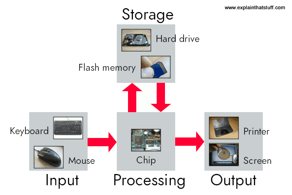

This website explores how computers process, store, and manage information using binary systems, logical operations, and hardware components. These concepts are essential to understanding modern technology and how digital systems function.

Figure: Input, Processing, Storage, and Output
Computers are an essential part of everyday life, used in communication, education, business, and entertainment. At their core, computers operate by processing data using a combination of hardware and software. Understanding how computers work helps explain how applications run, how data is stored, and how systems communicate.
This website provides an overview of the fundamental components of computing, including binary systems, the central processing unit (CPU), and key computing concepts.
Computers process information by following a sequence of instructions. These instructions are executed by the CPU, which performs calculations and manages data flow. Information is stored in memory and represented using binary values, allowing computers to efficiently handle complex tasks.
The interaction between input, processing, and output allows computers to perform a wide range of functions, from simple calculations to running advanced software applications.
This website is divided into several sections to help explain each concept in detail:
Understanding how computers work is important for anyone studying Information Technology. These concepts form the foundation for more advanced topics such as programming, networking, and cybersecurity.
By learning about binary systems, processing units, and algorithms, students can better understand how software and hardware interact to create modern computing systems.